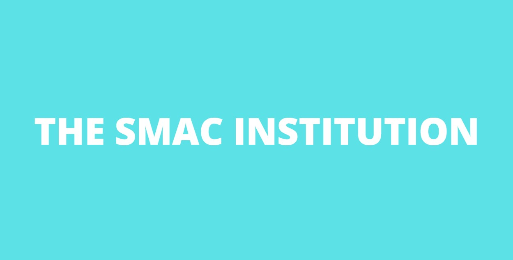
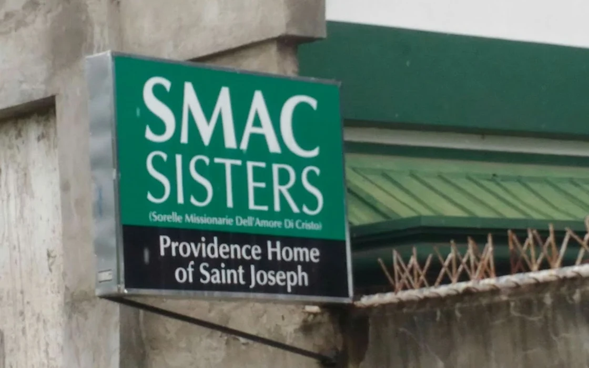

Partner Institution Needs Analysis and Resource Matching

The issue of adult, teen, and child abandonment, and abuse is what our partner institution is currently dealing with. This is pertinent to the establishment of the institution because it exists only to help and guide children who are in need and to help all children to achieve basic mastery of fundamental academic engagement and principles. It also helps children learn more and helps them be guided toward a better future. This issue is important to resolve because every human being has a right to enjoy the life at its fullest and not be conflicted because of your situation. Do not let your past burden your present.
Leading into explanation of this, the goal of the institution and their establishment is to be able to help and guide them to have a better future, and to be able to learn more from their academic teachings for them to grow in a normal childhood after their abandonment. Through the institution’s help and guidance to the children’s overcoming their abandonment they want the children to grow into a normal childhood with, shelter, food, clothes, and most importantly to achieve basic mastery of fundamental academic engagement and principles. For them to be able to live a better future than their past through the help and guidance of the SMAC institution.
Our partner institution will never give up in resolving this issue that they currently face with. This is because they have the data that can help and guide them improve and be able to address their current problem and that data also can give an upgrade that will help our partner institution, SMAC.
The analyzed consumption of our partner institution is the needs that they gave and support for the children in need of food, shelter, clothes, and more. And also their consumption that we analyze, shows the needs that they have that are unmet. The needs that they have that are unmet is more Promotion, Programs to support more childrens needs and also the needs of the partner institution, to be able to grow and help and guide other children in need. From this information the Partner institution can spread awareness for the people and children in need and also we got the people and electronics/machines that can help and guide us to meet these needs that can also help the Partner institution.
We got people and electronics/machines that can help us to meet these needs. We say so because all of us in our group, actually has access to people like friends and other more, and we actually have access to these electronics/ machines aswell. We could use these factors as a way to show love and support to our partner institution by making use of these resources like people for example, we could ask the people we know of or have connections to spread the situation of our partner institution so that they will get attention from other people, the electronics/ machines on the other hand, we could use them as a way to spread the situation of our partner institution by making posters and videos that we can spread online and on real life.
How We Can Help
Given our group’s capabilities and resources we believe that the best way to meet these unmet needs is to help them gain more exposure to more people and to look for more effective ways to earn money in their own way so that they will be able to provide not only for themselves but also the children they want to help. I say so because we believe that what they need the most right now is money and support so that they can get all the things they need to be able to run their organization better and because we as kid's ourselves are not able to make a big difference in helping them get a better lifestyle so the least we could do is to help them in however way we can.
We can make this proposal sustainable by the usage of electronics/ machines platforms, it will sustain and enable open communication, which helps the partner instiution to understand collaborative needs , in order to gain support to the institution and will recieve public responses that proactive and efficient to the needs of the partner instiution. For any technology to be successful and to have an impact on organizational performance, it has to be properly adopted by the partner institution.
Source(Photo)